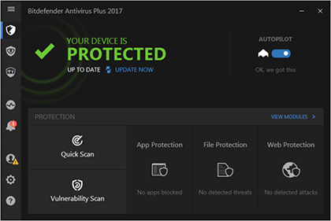
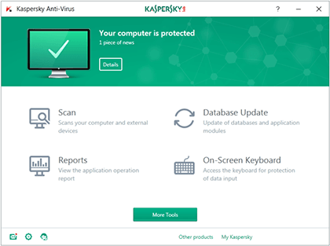
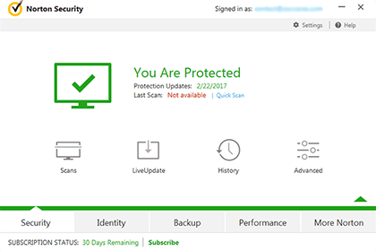
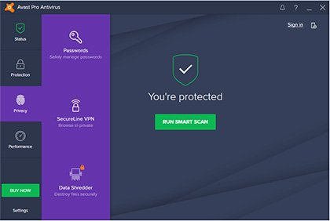
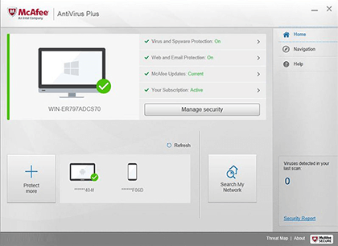

Top 5 Best Antivirus Software of 2017
Having a trusted and powerful antivirus software is extremely important for any computer, smartphone or tablet. Without a good antivirus protection, you risk losing your data, money and private life. It's essential to have installed a top rated antivirus software, to make sure that your files are protected.
Below you'll find a quick analysis and some conclusions about the best rated antivirus of 2017.
1. BITDEFENDER ANTIVIRUS PLUS 2017
Score: 9.9 / 10

If you're looking for that one antivirus software that offers the maximum of protection with minimal of computer resources consumed, BitDefender has exactly what you need!
BitDefender have a great record when it comes to antivirus solutions. Their products rank consistently in top 3 thanks to their quality. The team behind this popular brand manage to create top notch antivirus software year after year. The latest creation is the BitDefender Antivirus Plus 2017. Based on our intensive testing, this solution is the best one for 2017.
You're going to be very impressed by this option right from the start. The installation process goes smoothly. On the plus side, the user interface is very easy to use by pros and beginners alike. BitDefender's Antivirus Plus 2017 doesn't take up a lot of your system's resources. Another big advantage: it's fast. You won't end up with a lagging device once this antivirus program is up and running.
There are plenty of predefined modes on this security solution. You can configure and adapt each of them depending on what you need them for. Compared to its rivals, BitDefender made sure to bring a wealth of features for their most recent product. Ransomware protection is one of them, and it works like a charm. You won't have to pay insane amounts of money to unlock your sensitive data if you experience a ransom attack. Every single one of the other features does its job as it should be. Turn them on and start using your gadget without fear of landing in some serious problems.
2. KASPERSKY ANTIVIRUS 2018
Score: 9.8 / 10

We performed a series of intensive tests in different environments on a couple of machines and decided that Kaspersky's latest Antivirus 2018 is one of the best solutions around. What makes it so great, you ask? Let's see!
The legendary Kaspersky have just arrived with a new antivirus on the market. If you want to protect your crucial data from various threats, the Antivirus 2017 edition is the ideal pick.
Once you decide to get it for your device, you have to complete the installation process. Not to worry: it all takes very little of your time. As soon as the product is installed, you can run it at last. Like with the previously discussed BitDefender Antivirus Plus 2017, this software doesn't slow your computer down. You can still perform your daily tasks at the same speed as before.
As for features, you're covered. The antivirus module is one of the main ones. It's able to detect danger accurately and in a very short time. Now that you know you can get to work in complete safety, maybe you want to open an Internet page. Kaspersky's newest antivirus keeps you away from those infected websites so you can navigate the world wide web peacefully. A valuable addition to this new security solution is the self-defense area. Cyber criminals won't be able to change the antivirus' main core.
The Kaspersky Antivirus 2018 takes excellent care of your computer. You pay quite a lot for it, but you get great protection in return. Your device's performance won't suffer glitches as it usually does with lesser products. You can rely on the support team in times of trouble. They offer answers quickly and in a professional manner.
3. NORTON SECURITY 2017
Score: 9.7 / 10

Symantec makes one of the best antivirus solutions around. They're in our top three great antivirus software. The most recent solution they have for us is the Norton Security 2017. We ran some tests on our devices and came up with the following results!
The Norton Security 2017 is Symantec's best effort yet. The team did their best to come up with something that surpasses their previous work. This new software has everything those lacked. Starting from the installation process and ending with the support part, everything is loads improved.
What we loved about the latest product from Symantec is how small the installation pack is. This made the whole process that much easier, just like with the two antivirus solutions discussed earlier. You won't have problems using the user interface, even if you're not a pro.
Compared to many other antivirus solutions we tested, the Norton Security 2017 does something interesting. If you're a beginner, you'll become a fan. Here's what we mean: when an infected file is detected, the software moves it to quarantine without sending you a warning message. A lot of antivirus software on the market don't offer a firewall. The Norton Security 2017 has one incorporated, and it's very good.
The many great features you get with this security product won't slow your device down. On the contrary: it improves performance while making sure the computer is safe from major harm both locally and when you browse a website. We picked the Norton Security 2017 as our third option for best antivirus software for all of the reasons above. But we didn't mention the excellent support it provides and its great compatibility with Windows 10. You can ask any sort of security related question, and the support team will explain everything promptly.
Good value for money? Symantec's Norton Security 2017 sure is! You will enjoy very useful features which protect your gadgets against malware of every kind. The user interface is easy to use, and your system's performance won't be clogged.
4. AVAST ANTIVIRUS PRO 2017
Score: 9.6 / 10

If you've already tried the three options discussed above, and you liked neither of them, maybe it's time for something different. How about you give the Avast Antivirus Pro a try? We guarantee it's just as good as the ones we tested before.
Avast Software have been busy at work for every Windows, Android and macOS user out there. Their security solutions are something you can rely on. Because it was time for something new, the team has come up with this solution. This product takes security to the next level, and it shows. Install it on your device and watch how it protects it every step of the way.
We chose the Avast Antivirus Pro not only because of how well it did its job without slowing our PCs down. We also liked that it offers so many useful features. Turn them on, and your gadget will stay safe while you use it for work or school. The software provides complete protection for your computer and home network. The new stuff included in the 2017 version includes a redesigned user interface. This makes navigation so much better than before, especially for new users.
We also liked the faster performance. The set up is considerably faster, and there are less screen activity and interruptions. We could use two antivirus solutions simultaneously, and our devices didn't slow down as a result. If you're a fan of online transactions, the Avast Antivirus comes with great features. Should you ever experience issues with it, you can always send them a message from the actual product.
Why choose the Avast Antivirus? Simple: it's easy to use and you can sleep well at night knowing your device is protected against every major security threat out there!
5. MCAFEE ANTIVIRUS PLUS 2017
Score: 9.5 / 10

f you're looking for trusted antivirus products, McAfee is the name to keep an eye on. Intel Security put their team at work and released something new for PC, tablet and smartphone users. The newest version of their popular antivirus software is the star of our review. Find out how it scored in our tests!
The McAfee Antivirus Plus 2017 is the latest effort from Intel Security. It doesn't matter if your device runs Windows, macOS, Android or iOS. This security suite will work smoothly on all of them. Once the installation ends, you'll enjoy many new features. The most important addition is a behavior-centric antivirus engine. The user interface has been updated to a more intuitive one. Our hands-on malware blocking received an excellent score. The McAfee Antivirus Plus 2017 block malicious URLs very well.
The version for Android and iOS-running gadgets doesn't have the same amount of features as the one for macOS and Windows. The antiphishing module is another great effort from this antivirus solution. Support, as usual, is one of the best from the world. You should, however, keep in mind that this is a paid version. For its price you'll receive a top-notch security solution.